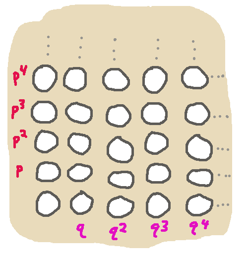
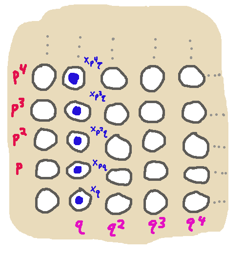
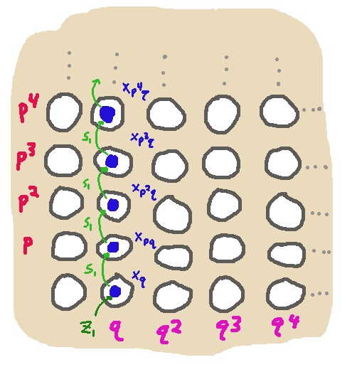

Parametricity and Substructural Types
So Chris was telling
me about an interesting yet-unpublished project of theirs
and Frank's trying to figure
out a parametricity story for ordered logic. I got pretty excited to hear about it,
since their proof technique involved the sort of substructural Kripke-ish world algebra machinations that I was
so fond of employing in my thesis. Though I seem to be very late to this particular party,
since there was a paper way back in 2010 that
handled parametricity for linear type systems somehow, although not with substructural worlds.
Anyway, I got nerd-sniped enough to try to see if I could work out one little example of a theorem-for-free
for a linear type, guessing at how one could do it with worlds, in the hope that it might warm my brain
up for digesting Chris and Frank's draft proof. Here goes:
A Polymorphic Linearity Type
Here's a type:
\[ \forall \alpha . (\alpha \lol \alpha) \lol ( \alpha \lol \alpha ) \tag{1}\]
An inhabitant of it should be a function, for any type $\alpha$, that takes a function $s : \alpha \lol \alpha$,
which uses its argument exactly once, (and also $s$ should be called exactly once),
and also an argument $z : \alpha$, which is used exactly once. We anticipate there's only one such function,
\[ \lambda s . \lambda z . s\ z \]
Let's argue that in fact this is the only such function,
predicated on the assumption that the function is "sufficiently
parametric", deciding as we go along what that means.
Turning linearity into indexing
Now I want to pull the trick that I pulled in my thesis. To do that I say that every "linearity type"
— any type that traffics with linear type operators like $\lol$ — is secretly not really a type,
but rather a $\W \to \rtype$, for $\W$ being some commutative monoid (all monoids below will be commutative without further mention) of worlds or resources.
Notationally, I'll use $\varepsilon : \W$ for the unit of this monoid, and $\cdot$ or mere juxtaposition for the product.
So now (also using Agda-style notation for universal quantification) I want to work with the type
\[ ( \alpha : \W \to \rtype) \to ((\alpha \lol \alpha) \lol ( \alpha \lol \alpha ))(\varepsilon) \tag{2}\]
The $\varepsilon$ is there because I'm interested in closed inhabitants of this type, that use no linear resources.
The type operator $\lol$ can be defined as a thing that turns two $\W \to \rtype$ into a $\W \to \rtype$:
\[ (\tau_1 \lol \tau_2)(q) = (p : \W) \to \tau_1(p) \to \tau_2 (pq)\]
and given this definition, my type of interest expands to:
\[ ( \alpha : \W \to \rtype) (p\ q : \W) \to \]
\[((r : \W) \to \alpha(r) \to \alpha(qr)) \to \alpha(q) \to \alpha(pq) \tag{3}\]
Now we've banished all notions of linearity in favor of the encoded "constructive semantics" of linear logic in terms
of a resource monoid.
Quantification over Monoids
In my thesis I remained kind of handwavy about what "the" type of
worlds really was. It was meant to be the free monoid over
whatever world variables happened to be in the context. Here I
want to be a bit clearer, and a bit more compatible with an
imagined mechanization in, say, Agda. So instead what I'm going to do is assume that the desired inhabitant
of the type (1)-(3) should be well-typed for any monoid. I'll include the quantification over the monoid in
the type, and apply parametricity reasoning to it like any other. So we're now looking for an inhabitant of
\[ \tau = (\W : \rtype) \{\_ : \mathsf{isMonoid}\ \W\} ( \alpha : \W \to \rtype) \to (p\ q : \W) \to \]
\[(s : (r : \W) \to \alpha(r) \to \alpha(pr)) (z : \alpha(q)) \to \alpha(pq) \tag{4}\]
where we can imagine $\mathsf{isMonoid}\ \W$ specifying the unit and multiplication and associativity and so on. We're also using Agda syntax here by using $\{$braces$\}$ for implicit arguments.
Parametricity: Binary Relation
So what does a parametric inhabitant of $\tau$ look like? It's some term of type $\tau$ that's related to itself at
the relation corresponding to type $\tau$. Let's try to unpack what that binary relation is. We'll say $g_1 \sim g_2 : \tau$
if, well... let's look at the arguments of the function type $\tau$ one by one. We'll mark the original function type
in gray, and the bits of the new type that we're building up in blue. Quantifying over a type
\[\gray{(\W : \rtype) }\]
means we should quantify over two types and a relation between them:
\[\blue{(\W_1\ \W_2 : \rtype) (\_\sim_\W\_ : \W_1 \to \W_2 \to \rtype)}\]
The monoid structure
\[ \gray{ (\_ : \mathsf{isMonoid}\ \W) }\]
should probably lead to some sort of compatibility of the relation $\sim_\W$ with the monoid structure. I'm pretty sure I need at least stuff like
\[ p_1\sim_\W p_2\qquad q_1\sim_\W q_2 \over p_1q_1 \sim_\W p_2q_2 \tag{\(*\)}\]
but I'll just wave my hands over this and say
\[\blue{(\_ : \mathsf{isMonoid}\ \W_1) (\_ : \mathsf{isMonoid}\ \W_2) (\_ : \mathsf{MonoidCompat}\ \sim_\W )}\]
Now we come to the type $\alpha$ that varies from world to world. I surmise that
\[ \gray{ ( \alpha : \W \to \rtype) }\]
should lead to
\[\blue{(\alpha_1 : \W_1 \to \rtype)(\alpha_2 : \W_2 \to \rtype)}\]
\[\blue{(\_\sim_\alpha\_ : \{p_1 : \W_1\}\{p_2 : \W_2\}\{\_ : p_1\sim_\W p_2 \} \to \alpha_1\ p_1 \to \alpha_2\ p_2 \to \rtype )}\]
That is, whenever we have related family indices, then we should
have a relation between types.
The arguments
\[ \gray{(p\ q : \W)}\]
become more or less straightforwardly
\[ \blue{(p_1\ p_2 \ q_1\ q_2 : \W) \to (p_1 \sim_\W p_2) \to (q_1 \sim_\W q_2) \to }\]
The argument
\[\gray{(s : (r : \W) \to \alpha(r) \to \alpha(qr)) }\]
becomes the somewhat involved
\[\blue{(s_1 : \{r : \W_1\} \to \alpha_1(r) \to \alpha_1(p_1r)) (s_2 : \{r : \W_2\} \to \alpha_2(r) \to \alpha_2(p_2r)) }\]
\[\blue{(\_ : (r_1: \W_1) (r_2: \W_2) \to r_1\sim_\W r_2 \to {}}\]
\[ \qquad \blue{(a_1 : \alpha_1(r_1))(a_2 : \alpha_2(r_2)) \to a_1 \sim_\alpha a_2 \to }\]
\[ \qquad \blue{s_1\ a_1 \sim_\alpha s_2\ a_2)}\]
(note that we need $(*)$ for this to even typecheck)
Finally, the argument
\[\gray{\alpha(q) \to}\]
can become
\[\blue{(z_1 : \alpha(q_1)) (z_2 : \alpha(q_2)) \to z_1\sim_\alpha z_2 \to} \]
and the original return type
\[\gray{\alpha(pq)}\]
becomes the assertion that the result of applying the two functions $g_1$ and $g_2$ to all of their related arguments
leads to related return values:
\[\blue{(g_1\ \W_1\ \alpha_1\ p_1\ q_1\ s_1\ z_1)
\sim_\alpha (g_2\ \W_2\ \alpha_2\ p_2\ q_2\ s_2\ z_2)}\]
Instantiating Relations with Functions
Some unspecified parametricity theorem, if I had taken the trouble to state and prove it, would ostensibly guarantee us that any function
$g : \tau$ we can actually write will be related to itself in this relation, i.e. it will satisfy the property that
\[{(\W_1\ \W_2 : \rtype) (\_\sim_\W\_ : \W_1 \to \W_2 \to \rtype)}\]
\[{(\_ : \mathsf{isMonoid}\ \W_1) (\_ : \mathsf{isMonoid}\ \W_2) (\_ : \mathsf{MonoidCompat}\ \sim_\W )}\]
\[{(\alpha_1 : \W_1 \to \rtype)(\alpha_2 : \W_2 \to \rtype)}\]
\[{(\_\sim_\alpha\_ : \{p_1 : \W_1\}\{p_2 : \W_2\}\{\_ : p_1\sim_\W p_2 \} \to \alpha_1\ p_1 \to \alpha_2\ p_2 \to \rtype )}\]
\[ {(p_1\ p_2 \ q_1\ q_2 : \W) \to (p_1 \sim_\W p_2) \to (q_1 \sim_\W q_2) \to }\]
\[{(s_1 : \{r : \W_1\} \to \alpha_1(r) \to \alpha_1(p_1r)) (s_2 : \{r : \W_2\} \to \alpha_2(r) \to \alpha_2(p_2r)) }\]
\[{(\_ : (r_1: \W_1) (r_2: \W_2) \to r_1\sim_\W r_2 \to {}}\]
\[ \qquad {(a_1 : \alpha_1(r_1))(a_2 : \alpha_2(r_2)) \to a_1 \sim_\alpha a_2 \to }\]
\[ \qquad {s_1\ a_1 \sim_\alpha s_2\ a_2)}\]
\[{(z_1 : \alpha(q_1)) (z_2 : \alpha(q_2)) \to z_1\sim_\alpha z_2 \to} \]
\[{(g\ \W_1\ \alpha_1\ p_1\ q_1\ s_1\ z_1)
\sim_\alpha (g\ \W_2\ \alpha_2\ p_2\ q_2\ s_2\ z_2)}\]
We are free to plug in some special cases for some of the arguments of this result,
so let's do so. Instead of a general relation $\sim_\W$, let's suppose we have a functional
relation
\[f_\W : \W_1 \to \W_2\]
and instead of a general relation $\sim_\alpha$, let's suppose we have a functional relation
\[f_\alpha : \{p_1 : \W_1\} \to \alpha_1(p_1) \to \alpha_2(f_\W(p_1))\]
This simplifies the above result to
\[{(\W_1\ \W_2 : \rtype) (f_\W : \W_1 \to \W_2)}\]
\[{ (\_ : \mathsf{isMonoid}\ \W_1) (\_ : \mathsf{isMonoid}\ \W_2) (\_ : \mathsf{isMonoidMorphism}\ f_W) }\]
\[{(\alpha_1 : \W_1 \to \rtype)(\alpha_2 : \W_2 \to \rtype)}\]
\[(f_\alpha : \{p_1 : \W_1\} \to \alpha_1(p_1) \to \alpha_2(f_\W(p_1)))\]
\[ {(p_1\ q_1 : \W) \to }\]
\[{(s_1 : \{r : \W_1\} \to \alpha_1(r) \to \alpha_1(p_1r)) (s_2 : \{r : \W_2\} \to \alpha_2(r) \to \alpha_2(f_\W(p_1)r)) }\]
\[{(\_ : (r_1: \W_1)(a_1 : \alpha_1(r_1)) \to f_\alpha(s_1\ a_1) = s_2\ (f_\alpha(a_1)))}\]
\[{(z_1 : \alpha(q_1)) \to } \]
\[{f_\alpha (g\ \W_1\ \alpha_1\ p_1\ q_1\ s_1\ z_1)
= g\ \W_2\ \alpha_2\ (f_\W(p_1))\ (f_\W(q_1))\ s_2\ (f_\alpha(z_1))}\]
Reading Off The Result
What we want to show is that any $g$ that has this property really is the Church numeral 1,
i.e. for any $\W_2\ \alpha_2\ p_2\ q_2\ s_2\ z_2$, we hope to obtain
\[g\ \W_2\ \alpha_2\ p_2\ q_2\ s_2\ z_2 = s_2\ z_2\]
We can do exactly this by cleverly choosing values to plug in for
\[\W_1\ \alpha_1\ p_1\ q_1\ s_1\ z_1\ f_\W\ f_\alpha\]
First, we choose $\W_1$ to be the free monoid generated by the
2-element set $\{\mathtt{p}, \mathtt{q}\}$.

Next we plug in for $\alpha_1 : \W_1 \to \rtype$ the family of sets
where there's exactly one inhabitant of
$\alpha_1(\mathtt{p}^n\mathtt{q}^m)$ when $m = 1$, (and we'll call
this element $\mathtt{x}_{\mathtt{p}^n\mathtt{q}^m}$) and no
inhabitants otherwise.

Next we set $p_1 = \mathtt{p}$ and $q_1 = \mathtt{q}$.
Next we define the function $s_1 : \{r : \W_1\} \to \alpha_1(r) \to \alpha_1(p_1r)$
by:
\[ s_1\ \mathtt{x}_{\mathtt{p}^n\mathtt{q}} =
\mathtt{x}_{\mathtt{p}^{n+1}\mathtt{q}}\]
Next we choose $z_1 = \mathtt{x}_{\mathtt{q}}$.

Next we define $f_\W : \W_1 \to \W_2$, by saying
\[f_\W(\mathtt{p}^n\mathtt{q}^m) = p_2^nq_2^m\]
and $f_\alpha : \{p_1 : \W_1\} \to \alpha_1(p_1) \to \alpha_2(f_\W(p_1))$
by saying
\[f_\alpha\ \mathtt{x}_{\mathtt{p}^n\mathtt{q}} = \overbrace{s_2( \cdots s_2(}^{n\hbox{ times}}z_2)\cdots)\]
It's straightforward to confirm that $f_\W$ is indeed a monoid
homomorphism, and that the compatibility condition
\[(r_1: \W_1)(a_1 : \alpha_1(r_1)) \to f_\alpha(s_1\ a_1) = s_2\ (f_\alpha(a_1))\] is
satisfied.
Since per our definitions
$f_\alpha(z_1) = f_\alpha(\mathtt{x}_\mathtt{q}) = z_2$
and $f_\W(p_1) = f_\W(\mathtt{p}) = p_2$
and $f_\W(q_1) = f_\W(\mathtt{q}) = q_2$,
we can massage the parametricity result to conclude that for any
$\W_2\ \alpha_2\ p_2\ q_2\ s_2\ z_2$, we have
\[g\ \W_2\ \alpha_2\ p_2\ q_2\ s_2\ z_2 = f_\alpha (g\ \W_1\ \alpha_1\ p_1\ q_1\ s_1\ z_1)\]
What does this tell us? Well, notice that
\[g\ \W_1\ \alpha_1\ p_1\ q_1\ s_1\ z_1 : \alpha_1(p_1q_1) \]
and $\alpha_1(p_1q_1) = \alpha_1(\mathtt{pq}) = \{ \mathtt{x}_{\mathtt{pq}}\}$
has exactly one inhabitant! So
\[g\ \W_1\ \alpha_1\ p_1\ q_1\ s_1\ z_1 = \mathtt{x}_{\mathtt{pq}}\]
and
\[ f_\alpha( \mathtt{x}_{\mathtt{pq}}) = s_2\ z_2 \]
giving us
\[g\ \W_2\ \alpha_2\ p_2\ q_2\ s_2\ z_2 = s_2\ z_2\]
which is the desired result: the only parametric inhabitant of
\[ \forall \alpha . (\alpha \lol \alpha) \lol ( \alpha \lol \alpha ) \]
is the Church numeral 1.